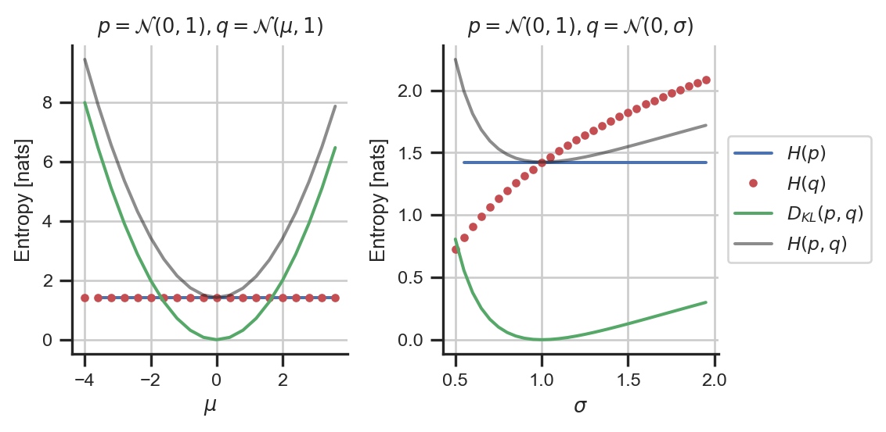

Code
import matplotlib.pyplot as plt
import seaborn as sns
import numpy as np
import torch
custom_params = {"axes.spines.right": False, "axes.spines.top": False}
sns.set_theme(style="ticks", font_scale=0.8, rc=custom_params)
# p as a fixed Gaussian
mu_p, std_p = 0.0, 1.0
p = torch.distributions.Normal(loc=mu_p, scale=std_p)
x_obs = p.sample((10000,))
# H(p) calculations:
Hp_theory = p.entropy()
Hp_emp = -p.log_prob(x_obs).mean()
# q as Gaussians with varying mu
Dpq = []
Hpq = []
Hq = []
q_mu = np.arange(-4, 4, 0.4)
q_sd = 1.0
for mu in q_mu:
q = torch.distributions.Normal(loc=mu, scale=q_sd)
Dpq.append(torch.distributions.kl_divergence(p, q))
Hpq.append(-q.log_prob(x_obs).mean())
Hq.append(q.entropy())
f, ax = plt.subplots(1, 2, figsize=(6, 2))
ax[0].plot(q_mu[[1, -1]], [Hp_emp, Hp_emp], '-b', label=r'$H(p)$')
ax[0].plot(q_mu, Hq, '.r', label=r'$H(q)$')
ax[0].plot(q_mu, Dpq, '-g', label=r'$D_{KL}(p,q)$')
ax[0].plot(q_mu, Hpq, '-k', alpha=0.5, label=r'$H(p,q)$')
ax[0].set(xlabel=r'$\mu$',
ylabel='Entropy [nats]',
title=r'$p=\mathcal{N}(0,1), q=\mathcal{N}(\mu, 1)$')
ax[0].grid()
# q as Gaussians with varying sigma
Dpq = []
Hpq = []
Hq = []
q_sd = np.arange(0.5, 2, 0.05)
q_mu = 0.0
for sd in q_sd:
q = torch.distributions.Normal(loc=q_mu, scale=sd)
Dpq.append(torch.distributions.kl_divergence(p, q))
Hpq.append(-q.log_prob(x_obs).mean())
Hq.append(q.entropy())
ax[1].plot(q_sd[[1, -1]], [Hp_emp, Hp_emp], '-b', label=r'$H(p)$')
ax[1].plot(q_sd, Hq, '.r', label=r'$H(q)$')
ax[1].plot(q_sd, Dpq, '-g', label=r'$D_{KL}(p,q)$')
ax[1].plot(q_sd, Hpq, '-k', alpha=0.5, label=r'$H(p,q)$')
ax[1].set(xlabel=r'$\sigma$',
ylabel='Entropy [nats]',
title=r'$p=\mathcal{N}(0,1), q=\mathcal{N}(0,\sigma)$')
ax[1].grid()
ax[1].legend(loc='center left', bbox_to_anchor=(1, 0.5))
plt.tight_layout()
plt.show()